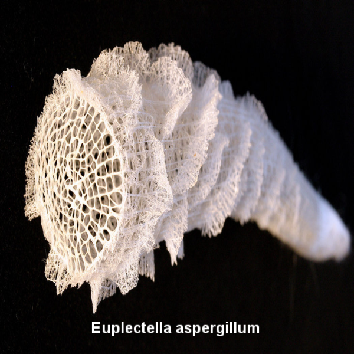

Bienvenido a Radix Lab
Investigación en matemáticas, biología y diseño
Descripción
Radix Lab es un espacio de investigación y desarrollo centrado en la exploración matemática de estructuras biológicas, procesos de crecimiento, adaptación y comportamientos distribuidos y emergentes. Su enfoque integra conocimientos provenientes de la biología, la física, la ingeniería y el diseño, con el propósito de articular el trabajo teórico con la experimentación. Esto da lugar a prototipos impresos, modelos visuales interactivos, instalaciones sensibles al entorno y estructuras que reproducen comportamientos naturales. Este enfoque híbrido permite consolidar líneas de investigación aplicadas tanto al ámbito artístico como al educativo, generando conocimiento transferible a múltiples contextos disciplinares.
En las investigaciones de Radix Lab se emplea software libre para diseñar algoritmos que permiten simular y traducir los componentes investigativos en geometrías dinámicas, estructuras paramétricas y artefactos visuales, auditivos o físicos.
Herramientas Tecnológicas
- PYTHON: Modelado matemático, generación de geometrías, exportación de mallas STL.
- PROCESSING: Visualización interactiva y simulación de comportamientos naturales.
- OPENSCAD: Diseño paramétrico para fabricación digital.
- ARDUINO: Integración de sensores para piezas interactivas.
- FABRICACIÓN: Impresión 3D FDM, corte láser, fresado CNC, carpintería y trabajo en metal.
Estructuras que evolucionan
La siguiente visualización muestra una simulación generativa de un gyroide animado, una estructura periódica mínima inspirada en formas biológicas, en este caso una Euplectella aspergillum (la esponja canasta de Venus).

▶Algunos proyectos recientes
- Modelos de crecimiento de estructuras biológicas mediante algoritmos generativos, exportables en STL para impresión 3D.
- Simulación de comportamiento colectivo (como colonias de hormigas) mediante sistemas multiagente.
- Estalactitas sintéticas construidas con autómatas celulares y agregación jerárquica de voxels.
- Análisis y optimización matemática de estructuras bioinspiradas.
¿Te gustaría saber más, colaborar o llevar Radix a tu institución?
Escríbenos y abramos juntos nuevas formas de ver el mundo.